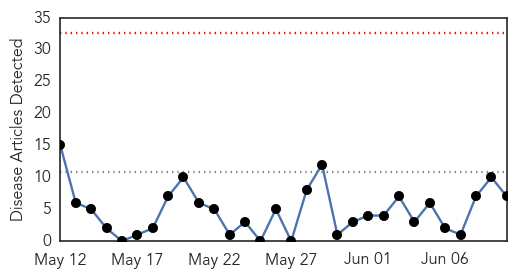
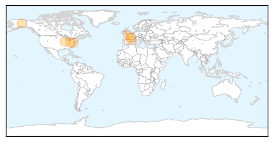
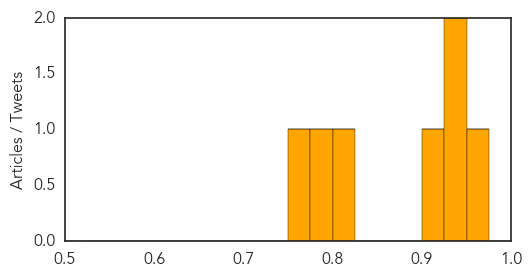

Meningitis
30-Day Web Trend
0 alerts, 0 warnings

30-Day Twitter Trend
1 alerts, 0 warnings

Article Locations

Article Confidences

Top Articles:
- 0.916
- UO Students Participating In Meningococcal Vaccine Study . News
- 0.906
- Rep. Greg Harris Rolls Up Sleeve for Meningitis Vaccination
- 0.893
- Religious Exemptions Shouldn't Keep Parents From Vaccinating Their Kids
- 0.878
- UO students participating in meningococcal vaccine study
- 0.775
- Experts warn of newer tick-borne infection
- 0.757
- Robert F. Kennedy, Jr.: Doing the math on meningitis vaccinations
- 0.608
- Single dose of HPV vaccine Cervarix pegged effective against 70% of cervical cancers
Top Tweets:
-
No tweets found for Jun 10, 2015
Measles
30-Day Web Trend
0 alerts, 0 warnings

30-Day Twitter Trend
1 alerts, 0 warnings

Article Locations
Article Confidences
Top Articles:
- 0.964
- Palmerston North Hospital staff in isolation as more measles cases considered
- 0.936
- German Measles eliminated from Americas
- 0.930
- Indian woman with Tuberculosis sets off scare in 3 US states
- 0.913
- Alaska confirms 1st measles case in more than a decade in Fairbanks
- 0.824
- AMA supports tighter limit on non-medical vaccine exemptions
- 0.791
- AMA: No vaccine exemptions for religious reasons or personal choice
- 0.750
- Diphtheria-Stricken Boy Becomes Spain's First Case In 28 Years, Thanks To Anti-Vaxxers
Top Tweets:
-
No tweets found for Jun 10, 2015